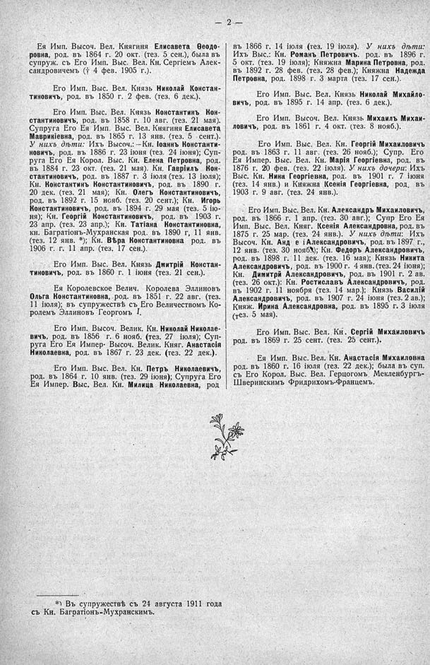

Лист источника 48
Скан

Распознанный текст
— 2 —
Ея Имп. Высоч. Вел. Княгиня Елисавета Ѳеодо-
ровна, род. въ 1864 г. 20 окт. (тез. 5 сен.), была въ
супруж. съ Его Имп. Выс. Вел. Кн. Сергіемъ Алек-
сандровичемъ († 4 фев. 1905 г.).
Его Имп. Выс. Вел. Князь Николай Констан-
тиновичъ, род. въ 1850 г. 2 фев. (тез. 6 дек.).
Его Имп. Выс. Вел. Князь Константинъ Кон-
стантиновичъ, род. въ 1858 г. 10 авг. (тез. 21 мая).
Супруга Его Ея Имп. Выс. Вел. Княгиня Елисавета
Маврикіевна, род. въ 1865 г. 13 янв. (тез. 5 сент.).
У нихъ дѣти: Ихъ Высоч.:-Кн. Іоаннъ Константи-
новичъ, род. въ 1886 г. 23 іюня (тез. 24 іюня); Суп-
руга Его Ея Корол. Выс. Кн. Елена Петровна, род.
въ 1884 г. 23 окт. (тез. 21 мая). Кн. Гавріилъ Кон-
стантиновичъ, род. въ 1887 г. 3 іюля (тез. 13 іюля);
Кн. Константинъ Константиновичъ, род. въ 1890 г.
20 дек. (тез. 21 мая); Кн. Олегъ Константиновичъ,
род. въ 1892 г. 15 нояб. (тез. 20 сент.); Кн. Игорь
Константиновичъ, род. въ 1894 г. 29 мая (тез. 5 ію-
ня); Кн. Георгій Константиновичъ, род. въ 1903 г.
23 апр. (тез. 23 апр.); Кн. Татіана Константиновна,
кн. Багратіонъ-Мухранская род. въ 1890 г, 11 янв.
(тез. 12 янв. *); Кн. Вѣра Константиновна род. въ
1906 г. г. 11 апр. (тез. 17 сен.).
Его Имп. Выс. Вел. Князь Дмитрій Констан-
тиновичъ, род. въ 1860 г. 1 іюня (тез. 21 сен.).
Ея Королевское Велич. Королева Эллиновъ
Ольга Константиновна, род. въ 1851 г. 22 авг. (тез.
11 іюля); въ супружествѣ съ Его Величествомъ Ко-
ролемъ Эллиновъ Георгомъ I.
Его Имп. Высоч. Велик. Кн. Николай Николае-
вичъ, род. въ 1856 г. 6 нояб. (тез. 27 іюля); Суп-
руга Его Ея Импер. Высоч. Велик. Княг. Анастасія
Николаевна, род. въ 1867 г. 23 дек. (тез. 22 дек.).
Его Имп. Выс. Вел. Кн. Петръ Николаевичъ,
род. въ 1864 г. 10 янв. (тез. 29 іюня); Супруга Его
Ея Импер. Выс. Вел. Кн. Милица Николаевна, род
въ 1866 г. 14 іюля (тез. 19 іюля). У нихъ дѣти:
Ихъ Выс.: Кн. Романъ Петровичъ, род. въ 1896 г.
5 окт. (тез. 19 іюля); Княжна Марина Петровна, род.
въ 1892 г. 28 фев. (тез. 28 фев.); Княжна Надежда
Петровна, род. 1898 г. 3 марта (тез. 17 сен.).
Его Имп. Выс. Вел. Князь Николай Михайло-
вичъ, род. въ 1895 г. 14 апр. (тез. 6 дек.).
Его Имп. Высоч. Вел. Князь Михаилъ Михаи-
ловичъ, род. въ 1861 г. 4 окт. (тез. 8 нояб.).
Его Имп. Выс. Вел. Кн. Георгій Михаиловичъ
род. въ 1863 г. 11 авг. (тез. 26 нояб.); Супр. Его
Ея Импер. Выс. Вел. Кн. Марія Георгіевна, род. въ
1876 г. 20 фев. (тез. 22 іюля). У нихъ дочери: Ихъ
Выс. Кн. Нина Георгіевна, род. въ 1901 г. 7 іюня
(тез. 14 янв.) и Княжна Ксенія Георгіевна, род. въ
1903 г. 9 авг. (тез. 24 янв.).
Его Имп. Выс. Вел. Кн. Александръ Михаиловичъ,
род. въ 1866 г. 1 апр. (тез. 30 авг.); Супр Его Ея
Имп. Выс. Вел. Княг. Ксенія Александровна, род. въ
1875 г. 25 мар. (тез. 24 янв.). У нихъ дѣти: Ихъ
Высоч. Кн. Андрей Александровичъ, род. въ 1897 г.,
12 янв. (тез. 30 нояб.); Кн. Ѳедоръ Александровичъ,
род. въ 1898 г. 11 дек. (тез. 16 мая); Князь Никита
Александровичъ, род. въ 1900 г. 4 янв. (тез. 24 іюня);
Кн. Димитрій Александровичъ, род. въ 1901 г. 2 ав.
(тез. 26 окт.): Кн. Ростиславъ Александровичъ, род.
въ 1902 г. 11 ноября (тез. 14 мар.); Князь Василій
Александровичъ, род. въ 1907 г. 24 іюня (тез. 2 ав.);
Княж. Ирина Александровна, род. въ 1895 г. 3 іюля
(тез. 5 мая).
Его Имп. Выс. Вел. Кн. Сергій Михаиловичъ
род. въ 1869 г. 25 сент. (тез. 25 сент.).
Ея Имп. Выс. Вел. Кн. Анастасія Михаиловна
род. въ 1860 г. 16 іюля (тез. 22 дек.); была въ суп.
съ Его Корол. Выс. Вел. Герцогомъ Мекленбургъ-
Шверинскимъ Фридрихомъ-Францемъ.
*) Въ супружествѣ съ 24 августа 1911 года
съ Кн. Багратіонъ-Мухранскимъ.